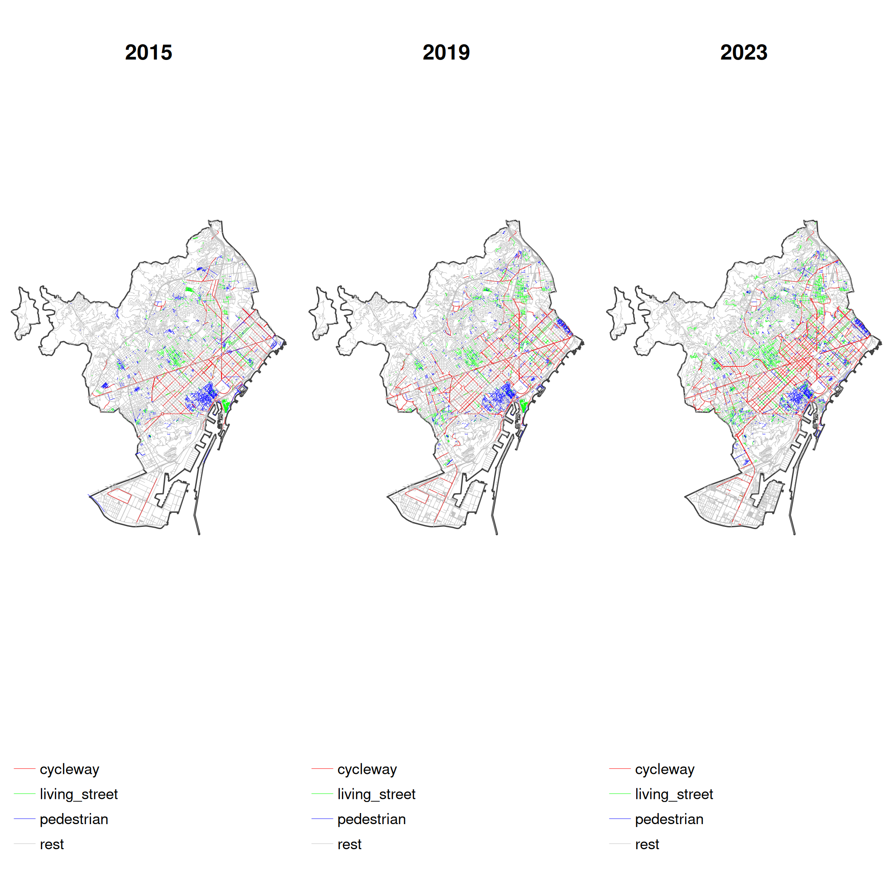
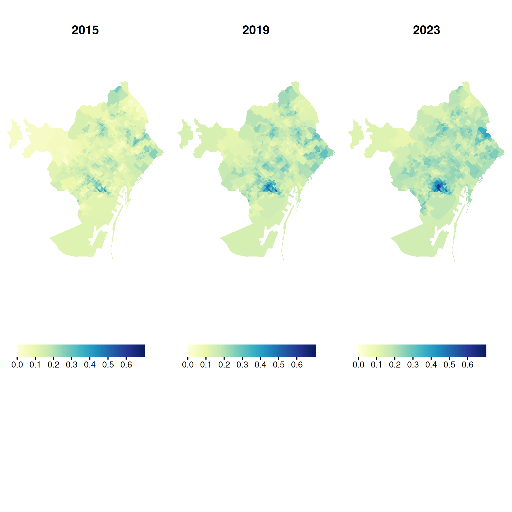
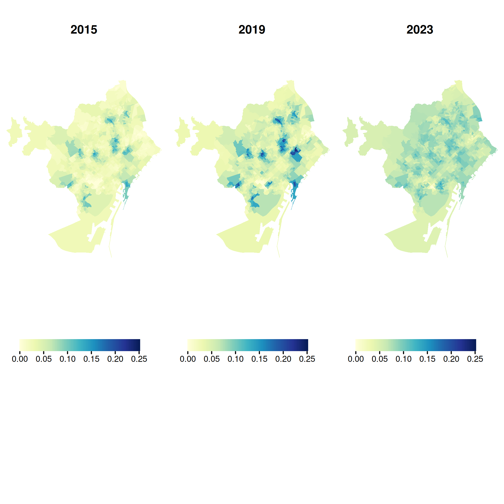
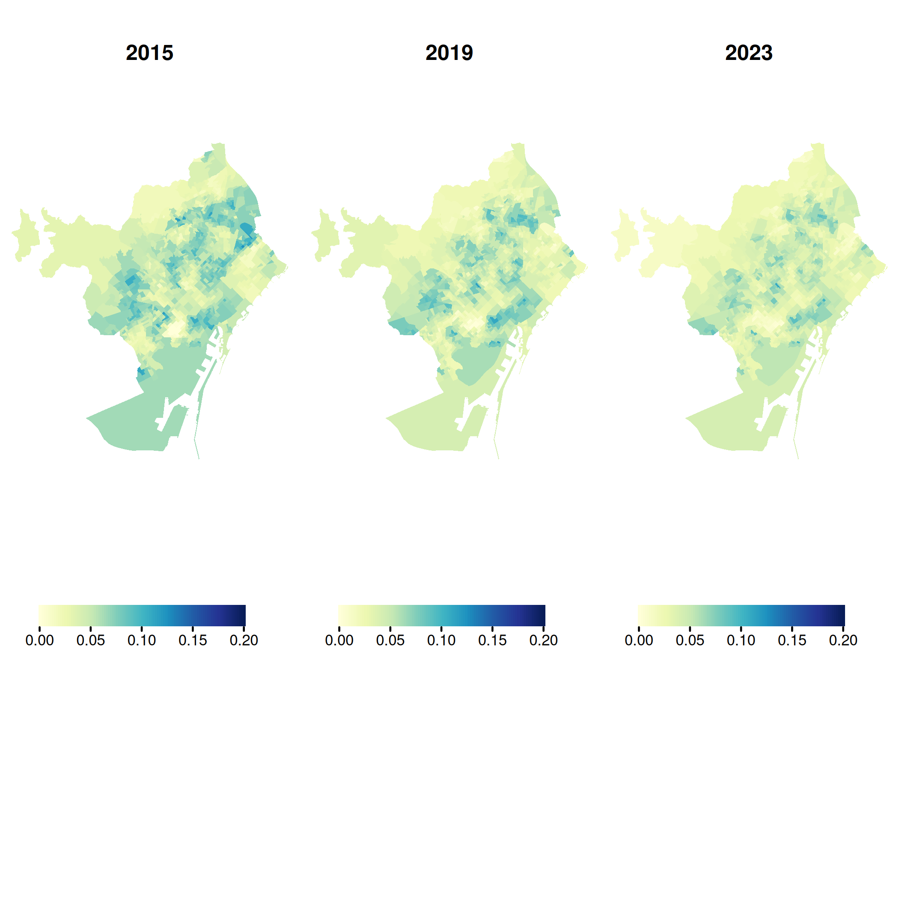

Evaluating OpenStreetMap for Tracking Active Travel Infrastructure Changes: A Multi-City Validation Across Seven European Cities
Introduction
The relationship between the built environment and travel behaviour has been widely studied, with many studies identifying associations between environmental characteristics and travel patterns (Cerin et al. 2017; Ding et al. 2011; Y. Zhang et al. 2022). However, most research relies on cross-sectional data, which cannot establish causality (McCormack and Shiell 2011; P. van de Coevering, and Wee 2015). In contrast, studies that track changes in both travel behaviour and the built environment—such as longitudinal studies and natural experiments—offer stronger causal insights but remain relatively scarce (Kärmeniemi et al. 2018; Smith et al. 2017; Tcymbal et al. 2020).
A key barrier to expanding this type of research is the limited availability of consistent, time-series data on the built environment. While historical travel behaviour data can sometimes be sourced from municipal surveys or crowdsourced platforms (e.g., Strava, travel diaries), equivalent records of past urban infrastructure are far less accessible. Some national databases, such as the Nationaal Wegenbestand (NWB) in the Netherlands (P. V. D. Coevering et al. 2016), offer partial solutions but lack the scope for large-scale, cross-city, or international comparisons. Manually creating in-house datasets is another option, but it is costly and typically results in small samples.
The increasing availability of big data sources presents new opportunities to overcome these challenges (Aldred 2019). OpenStreetMap (OSM), in particular, holds great potential for tracking urban transformations over time. Historical OSM data, available from sources such as Geofabrik, provides snapshots of past infrastructure (dating back to at least 2015), enabling estimation of built environment changes over time. However, despite OSM’s growing coverage and reliability, its use as an indicator of urban transformation requires validation. The timing of updates may not always reflect actual changes, and data accuracy, completeness, and consistency vary across locations and feature types.
Previous studies have shown that OSM’s temporal data can capture meaningful urban change when validated against external sources. For example, L. Zhang and Pfoser (2019) compared OSM point-of-interest data with Foursquare to track changes in coffee shop locations, finding that OSM’s historical edits can reflect real-world trends despite variability in quality.
This study aims to evaluate the extent to which historical OpenStreetMap (OSM) data can reliably capture urban transformations in active travel infrastructure—such as bike lanes, pedestrian streets, and living streets—across different cities, and to develop a semi-automated method for its validation. Drawing on OSM historical snapshots from 2015 to 2023, we assess changes across two defined intervals: 2015–2019 and 2019–2023. Reported transformations in OSM during each interval are compared against external reference sources, including Google Street View (GSV), satellite imagery, and official municipal records. The validation process involves stratified random spatial sampling of small-area units, accounting for socio-demographic and geographic variation (e.g., city centers versus peripheries). Our analysis focuses on seven European cities—Barcelona, Milan, Ljubljana, Paris, Malmö, Utrecht, and Warsaw—selected for their relevance to a broader research initiative. While the present study focuses on these cases, the approach can be adapted to additional cities, offering a scalable framework for assessing OSM’s reliability in longitudinal and natural experiment studies on urban transformation. The method also has practical value for planners and policymakers seeking low-cost tools for infrastructure monitoring.
Data and Method
Data sources
- OSM
- GSV
- Satellite
- Official
Method
OSM data Barcelona
Road network by type
Indicators at the census tract level
- Cycleway Proportion of Total Network

- Living Street Proportion of Total Network

- Pedestrian Street Proportion of Total Network

References
Aldred, Rachel. 2019. “Built Environment Interventions to Increase Active Travel: A Critical Review and Discussion.” Current Environmental Health Reports 6 (4): 309–15. https://doi.org/10.1007/s40572-019-00254-4.
Cerin, Ester, Andrea Nathan, Jelle van Cauwenberg, David W. Barnett, Anthony Barnett, and on behalf of the Council on Environment and Physical Activity (CEPA) – Older Adults working group. 2017. “The Neighbourhood Physical Environment and Active Travel in Older Adults: A Systematic Review and Meta-Analysis.” International Journal of Behavioral Nutrition and Physical Activity 14 (1): 15. https://doi.org/10.1186/s12966-017-0471-5.
Coevering, Paul Van De, Kees Maat, Maarten Kroesen, and Bert Van Wee. 2016. “Causal Effects of Built Environment Characteristics on Travel Behaviour: A Longitudinal Approach.” European Journal of Transport and Infrastructure Research. https://doi.org/10.18757/EJTIR.2016.16.4.3165.
Coevering, Paul van de, Maat, and Bert and van Wee. 2015. “Multi-Period Research Designs for Identifying Causal Effects of Built Environment Characteristics on Travel Behaviour.” Transport Reviews 35 (4): 512–32. https://doi.org/10.1080/01441647.2015.1025455.
Ding, Ding, James F. Sallis, Jacqueline Kerr, Suzanna Lee, and Dori E. Rosenberg. 2011. “Neighborhood Environment and Physical Activity Among Youth.” American Journal of Preventive Medicine 41 (4): 442–55. https://doi.org/10.1016/j.amepre.2011.06.036.
Kärmeniemi, Mikko, Tiina Lankila, Tiina Ikäheimo, Heli Koivumaa-Honkanen, and Raija Korpelainen. 2018. “The Built Environment as a Determinant of Physical Activity: A Systematic Review of Longitudinal Studies and Natural Experiments.” Annals of Behavioral Medicine 52 (3): 239–51. https://doi.org/10.1093/abm/kax043.
McCormack, Gavin R., and Alan Shiell. 2011. “In Search of Causality: A Systematic Review of the Relationship Between the Built Environment and Physical Activity Among Adults.” International Journal of Behavioral Nutrition and Physical Activity 8 (1): 125. https://doi.org/10.1186/1479-5868-8-125.
Smith, Melody, Jamie Hosking, Alistair Woodward, Karen Witten, Alexandra MacMillan, Adrian Field, Peter Baas, and Hamish Mackie. 2017. “Systematic Literature Review of Built Environment Effects on Physical Activity and Active Transport – an Update and New Findings on Health Equity.” International Journal of Behavioral Nutrition and Physical Activity 14 (1): 158. https://doi.org/10.1186/s12966-017-0613-9.
Tcymbal, Antonina, Yolanda Demetriou, Anne Kelso, Laura Wolbring, Kathrin Wunsch, Hagen Wäsche, Alexander Woll, and Anne K. Reimers. 2020. “Effects of the Built Environment on Physical Activity: A Systematic Review of Longitudinal Studies Taking Sex/Gender into Account.” Environmental Health and Preventive Medicine 25 (1): 75. https://doi.org/10.1186/s12199-020-00915-z.
Zhang, Liming, and Dieter Pfoser. 2019. “Using OpenStreetMap Point-of-Interest Data to Model Urban Change—a Feasibility Study.” PLoS ONE 14 (2): e0212606. https://doi.org/10.1371/journal.pone.0212606.
Zhang, Yufang, Marijke Koene, Sijmen A. Reijneveld, Jolanda Tuinstra, Manda Broekhuis, Stefan van der Spek, and Cor Wagenaar. 2022. “The Impact of Interventions in the Built Environment on Physical Activity Levels: A Systematic Umbrella Review.” International Journal of Behavioral Nutrition and Physical Activity 19 (1): 156. https://doi.org/10.1186/s12966-022-01399-6.